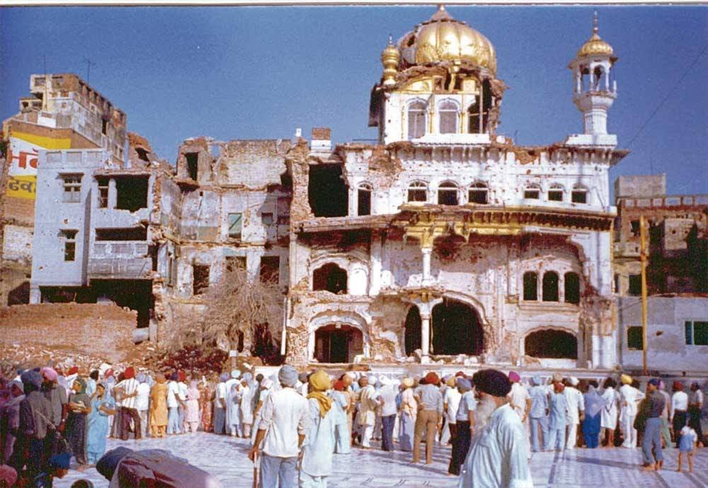
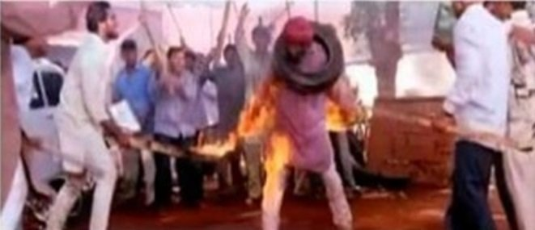
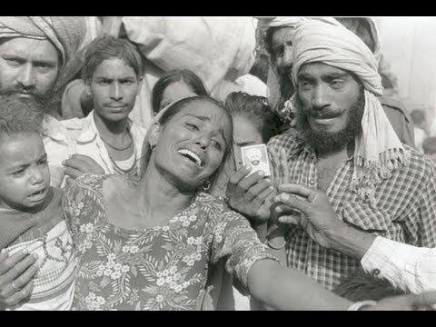
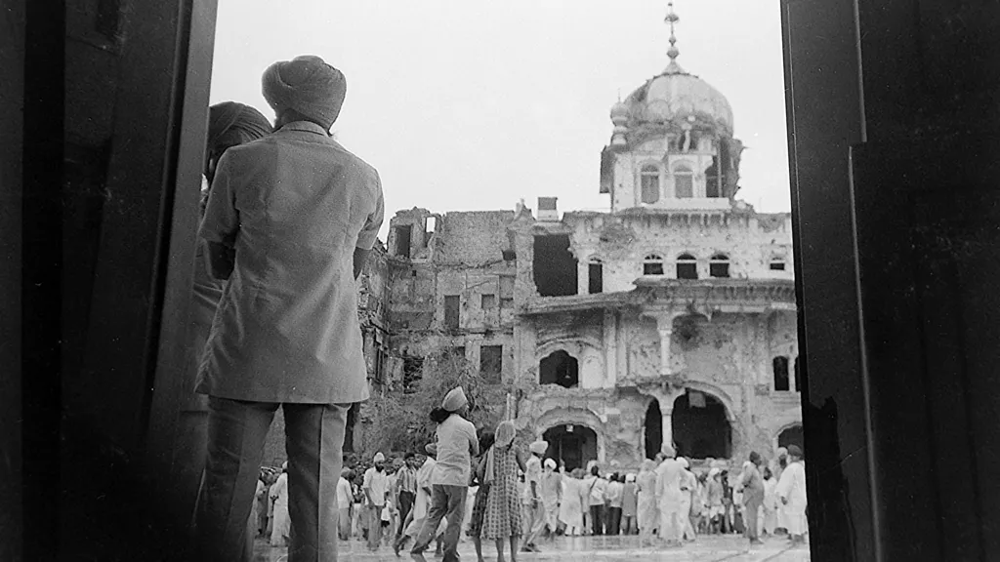

1984

Thirty-nine years ago, from October 31 to November 3, 1984, thousands of Sikhs were hunted and murdered by government-orchestrated mobs throughout India in a campaign of genocidal violence following the assassination of Prime Minister Indira Gandhi. Earlier this year, we also noted the 39th anniversary of Operation Blue Star, the Indian Army’s June 1984 assault on Darbar Sahib and dozens of other gurdwaras throughout Punjab—a coordinated attack that claimed the lives of thousands of innocent Sikhs.
As we recognize these anniversaries, it is important to understand the history and broader patterns beyond these specific atrocities. It is estimated that tens of thousands of Sikhs were killed in India from 1984 into the 1990s. This included not only mass, coordinated mob violence, but also targeted killings, disappearances, and general repression by the Indian state—and according to eyewitnesses and human rights activists, much of it was organized by government officials and facilitated by police officials.


The 1984 anti-Sikh riots, also known as the 1984 Sikh massacre or the 1984 Sikh genocide, was a series of organised pogroms against Sikhs in India following the assassination of Indira Gandhi by her Sikh bodyguards.[14][15][16][17][5][18] Government estimates project that about 2,800 Sikhs were killed in Delhi[5][6] and 3,350 nationwide,[11][12] whilst other sources estimate the number of deaths at about 8,000–17,000.[4][13][19][20]
The assassination of Indira Gandhi had taken place after she had ordered Operation Blue Star, a military action to secure the Golden Temple, a Sikh temple complex in Amritsar, Punjab, in June 1984.[21] The operation had resulted in a deadly battle with armed Sikh groups who were demanding greater rights and autonomy for Punjab and the deaths of many pilgrims. Sikhs worldwide had criticized the army action and many saw it as an assault on their religion and identity.[22][23][24]
In the aftermath of the pogroms, the government reported that 20,000 had fled the city; the People's Union for Civil Liberties reported "at least" 1,000 displaced persons.[25] The most-affected regions were the Sikh neighborhoods of Delhi. Human rights organizations and newspapers across India believed that the massacre was organized.[5][26][27] The collusion of political officials connected to the Indian National Congress in the violence and judicial failure to penalize the perpetrators alienated Sikhs and increased support for the Khalistan movement.[28] The Akal Takht, Sikhism's governing body, considers the killings a genocide.[29][30][3
